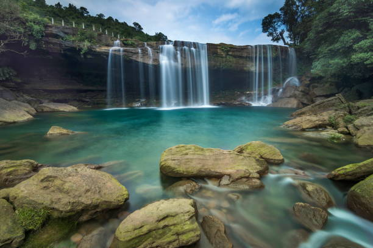

Meghalaya is one of the most beautiful places in India. It is famous for its green mountains, beautiful waterfalls, and natural beauty. It is also known as the "Abode of Clouds".
Meghalaya is a beautiful state in Northeast India.
It is known for its scenic landscapes, caves, waterfalls,
living root bridges and rich culture.
Shillong is the capital city of Meghalaya.

Location : Northeast India
Capital : Shillong
Best Time : October to April
Famous For : Waterfalls, Caves and Living Root Bridges
Popular Place : Cherrapunji (Sohra)
Meghalaya is a perfect destination for nature lovers and adventure seekers. You can learn more about Meghalaya by visiting the official tourism website.
Visit Meghalaya TourismMeghalaya is truly the "Abode of Clouds".